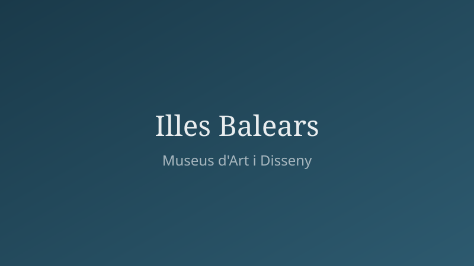

Museus d'Art i Disseny a les Illes Balears
Descobreix la riquesa cultural de Mallorca, Menorca, Eivissa i Formentera

Filtres de cerca
Escriu per filtrar la llista de museus
Els nostres museus
Cap museu coincideix amb els criteris seleccionats.
Rutes culturals recomanades
Ubicació dels museus
Els meus favorits
Afegeix museus a favorits per veure'ls aquí.